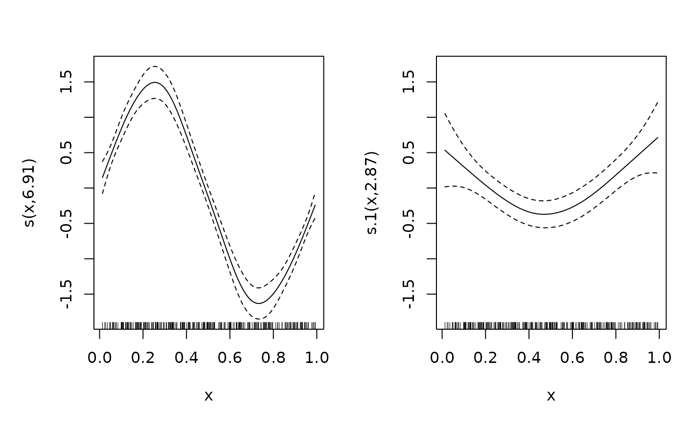

von Mises location-scale family for mgcv GAMs
vmlss.RdA general family implementing distributional regression for a circular
(angular) response \(y\) in radians, with
$$y \sim \mathrm{vM}(\mu, \kappa),$$
where both the mean direction \(\mu\) and the (log) concentration
\(\kappa\) get their own linear predictor, each of which may contain
smooth terms. Used with mgcv::gam and a list of two formulas: the
first specifies the response and the model for \(\mu\), the second the
model for \(\log\kappa\).
Usage
vmlss(link = list("tanhalf", "log"))Value
An object of class c("general.family", "extended.family", "family")
for use with gam.
Details
The mean direction uses the Fisher-Lee tan-half link, \(\mu = 2\arctan(\eta) \in (-\pi, \pi)\): the linear predictor's intercept sets the reference direction and the antipode of that direction is unrepresentable, the standard caveat of this link. The concentration uses a log link.
Log-likelihood derivatives up to fourth order are implemented, so the
family supports full Newton smoothing-parameter estimation with
method = "REML" (and the other general-family criteria, including
optimizer = "efs").
The derivative implementations are transcriptions of the finite-difference
verified implementations in the Python package pycircstat2, and the
fitted results are differentially tested against it.
The response should be supplied in radians; any branch (for example \([0, 2\pi)\) or \((-\pi, \pi]\)) is acceptable since the density is periodic. Fitted values are a two-column matrix: the mean direction in \((-\pi, \pi)\) and the concentration.
References
Fisher, N. I. and Lee, A. J. (1992) Regression models for an angular response. Biometrics 48, 665-677.
Wood, S. N., Pya, N. and Saefken, B. (2016) Smoothing parameter and model selection for general smooth models. Journal of the American Statistical Association 111, 1548-1575.
Examples
library(mgcv)
set.seed(1)
n <- 300
x <- runif(n)
mu <- 2 * atan(1.5 * sin(2 * pi * x))
kappa <- exp(1 + 0.8 * cos(2 * pi * x))
## von Mises deviates via wrapped rejection-free approximation for the
## example only: use circular::rvonmises or the family's rd in practice
y <- mu + rnorm(n) / sqrt(kappa) # high-kappa approximation, example only
b <- gam(list(y ~ s(x), ~ s(x)), family = vmlss(), method = "REML")
summary(b)
#>
#> Family: vmlss
#> Link function: tanhalf log
#>
#> Formula:
#> y ~ s(x)
#> <environment: 0x55fb1ee35198>
#> ~s(x)
#> <environment: 0x55fb1ee35198>
#>
#> Parametric coefficients:
#> Estimate Std. Error z value Pr(>|z|)
#> (Intercept) 0.10346 0.04183 2.474 0.0134 *
#> (Intercept).1 1.16066 0.07234 16.045 <2e-16 ***
#> ---
#> Signif. codes: 0 ‘***’ 0.001 ‘**’ 0.01 ‘*’ 0.05 ‘.’ 0.1 ‘ ’ 1
#>
#> Approximate significance of smooth terms:
#> edf Ref.df Chi.sq p-value
#> s(x) 6.91 7.962 669.76 < 2e-16 ***
#> s.1(x) 2.87 3.569 19.84 0.000442 ***
#> ---
#> Signif. codes: 0 ‘***’ 0.001 ‘**’ 0.01 ‘*’ 0.05 ‘.’ 0.1 ‘ ’ 1
#>
#> Deviance explained = 60.7%
#> -REML = 312.05 Scale est. = 1 n = 300
plot(b, pages = 1)
